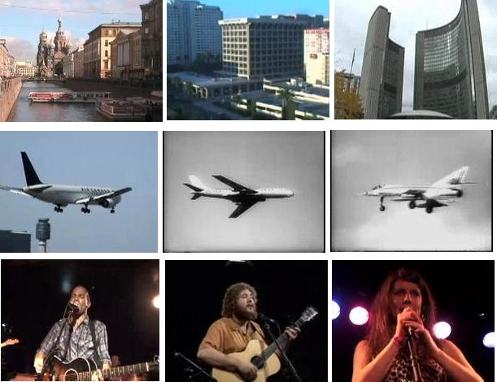
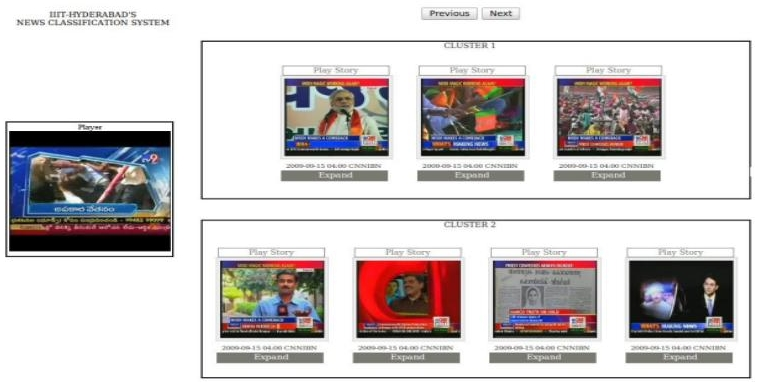

Projects
|
Semantic Indexing in Videos
The goal of the project is automatic assignment of semantic tags to video segments (referred as shots). The task consists of finding and ranking shots from the videos, having target objects/scenes such as Airplane, Boat, Cityscape etc. The state of art techniques in feature extraction, classification and detection methods are integrated to provide a vision only approach for semantic concept retrieval of videos. The algorithms were applied for the Semantic Indexing Task as a part of TRECVID 2010. This work was done in collaboration with Visual Geometry Group, University of Oxford. |
 | |
|
Grouping of Similar News Videos based on Visual content There are a large number of News channels broadcasting every second. Similar news get broadcast across multiple channels and across different times. The aim is to build a system which groups the similar news videos. The similarity of the news vidoes is done by finding the similarity between constituent frames, using an image search engine. |
 | |
|
Image Search using Text Search The project aimed at building an Image Search Engine using a Text Search Engine. The images are converted into text documents by encoding the colour features into text. The indexing and retrieval of the text documents is done using an open source Text Search Engine, Lucene. |